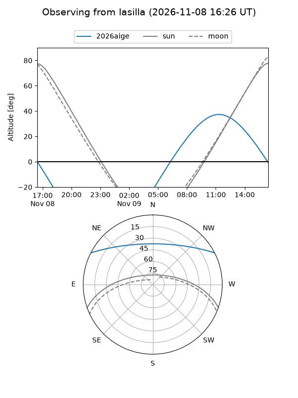
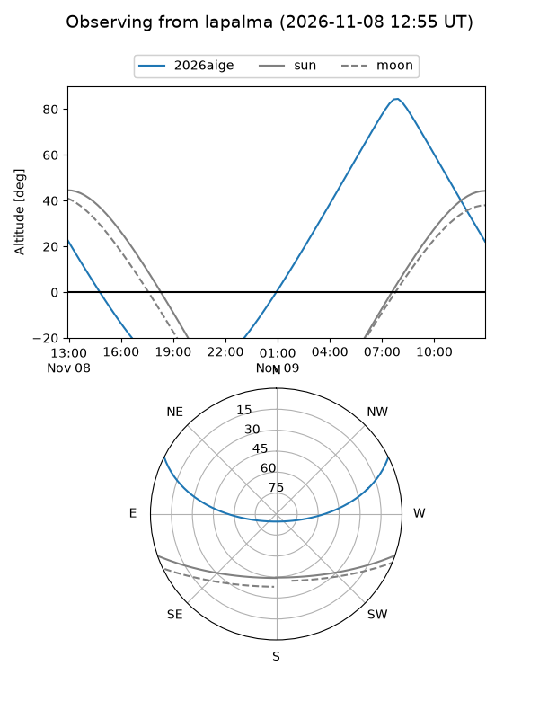
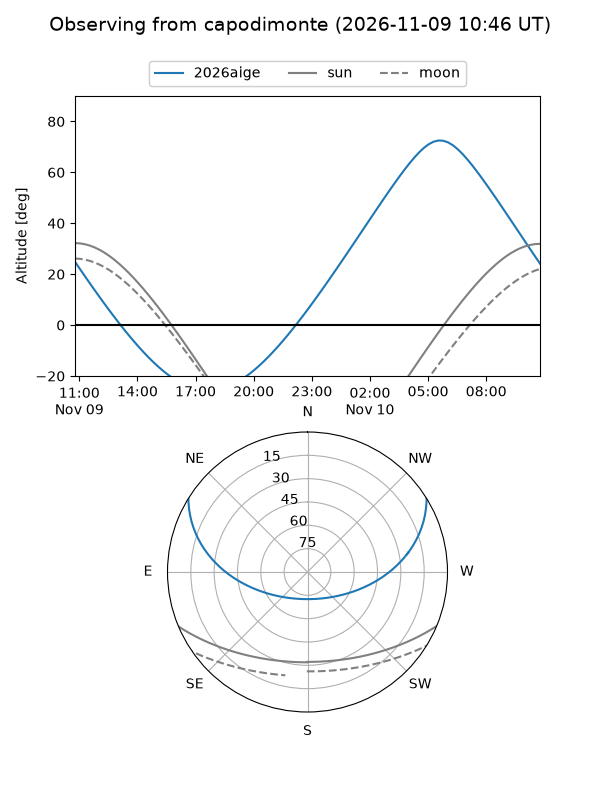
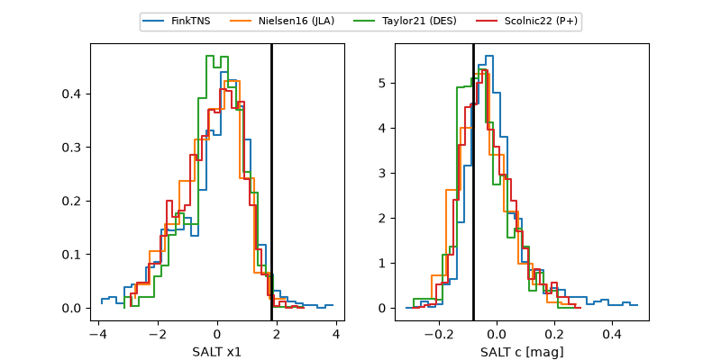

2026aige
Target 2026aige at 2026-11-08 14:19
Aliases and brokers:
FINK-ZTF: ztf.fink-portal.org/ZTF26aceujai
Lasair-ZTF: lasair-ztf.lsst.ac.uk/objects/ZTF26aceujai
ALeRCE-ZTF: alerce.online/object/ZTF26aceujai
YSE-PZ: ziggy.ucolick.org/yse/transient_detail/2026aige
TNS name: wis-tns.org/object/2026aige
Direct TNS query: direct search
alt names
ZTF26aceujai (ztf,fink_ztf)
2026aige (tns,yse)
Coordinates:
equatorial (ra, dec) = 147.5412,+23.53835
equatorial (HMS+DMS) = 09:50:09.90,+23:32:18.06
galactic (l, b) = (207.5446,+49.09904)
Flags:
peak dt: -9.1
Photometry:
last ztfg=18.15, ztfr=18.28
6 ztfg, 6 ztfr detections
Lightcurve
Visibility



Additional plots
